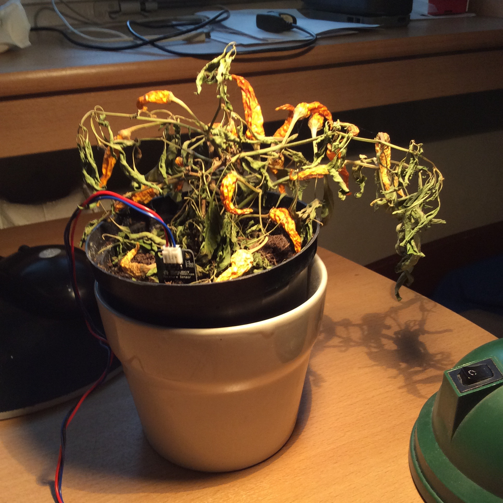
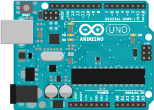
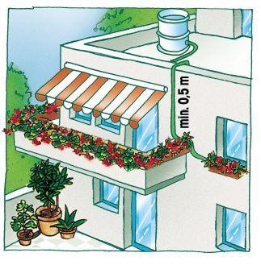
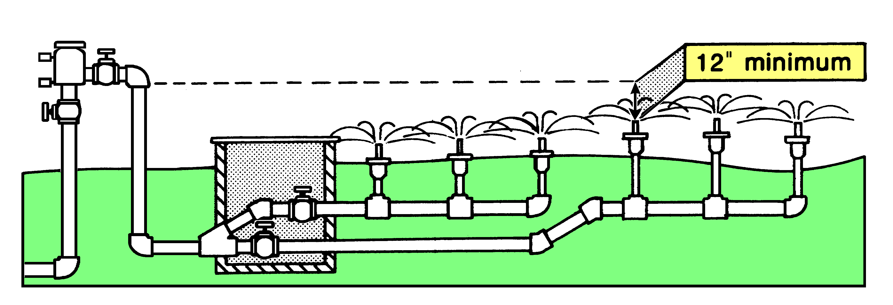
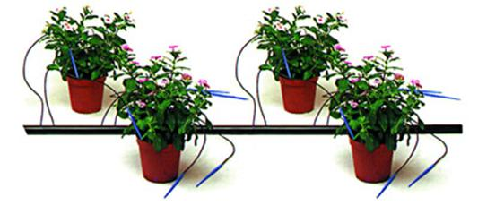
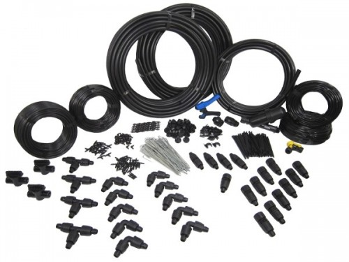
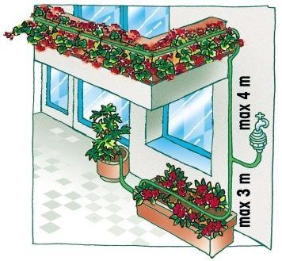

Plant watering kit with Ruby and Arduino
Present
Arduino
Arduino is an open-source electronics platform based on easy-to-use hardware and software. It's intended for anyone making interactive projects.
Process
- Research
- Shopping
- Software
- Setup
Research
Irrigation systems
 Transistor

Shopping
- Castorama
- Botland
Software
Example
require 'artoo'
connection :arduino, :adaptor => :firmata, :port => '127.0.0.1:8023'
# Analog inputs are based from 0 to 5 on the Arduino UNO, may vary on other arduino boards
device :sensor, driver: :analog_sensor, pin: 0, interval: 0.25, upper: 900, lower: 200
device :led, :driver => :led, :pin => 8
work do
puts
puts "Reading sensor in analog pin #{ sensor.pin }"
puts "Reading intervals every => #{ sensor.interval }"
puts "Initial sensor value => #{ sensor.analog_read(0) }"
puts "Sensor upper trigger set at value => #{ sensor.upper }"
puts "Sensor lower trigger set at value => #{ sensor.lower }"
on sensor, :upper => proc {
puts "UPPER LIMIT REACHED!"
led.off
}
on sensor, :lower => proc {
puts "LOWER SENSOR LIMIT REACHED!"
led.on
}
end
Setup
  Future
We implement successful software and consultancy projects
We support small enterprises and major corporations in the areas of software development, IT infrastructure, project management and process management.